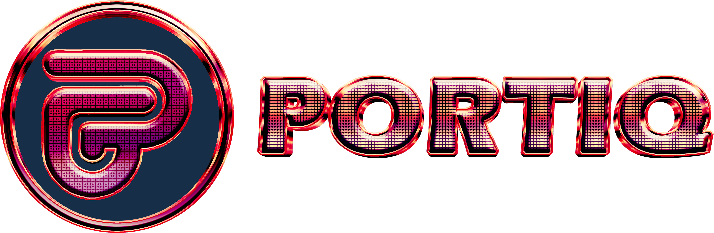

Portiq is an AI-powered crypto portfolio assistant that helps you analyze wallet distribution, identify risk, and simulate rebalancing strategies in real time — directly from Telegram or web. Say goodbye to static tracking. It's time to manage with intelligence, precision, and confidence.
Get Started Read DocsPortiq is not just a portfolio tracker — it's your intelligent crypto strategist. In a market full of noise and uncertainty, Portiq gives you clarity through real-time wallet analysis, AI-powered rebalancing suggestions, and backtested simulations. It transforms passive tracking into active decision-making. With Portiq, you don’t react late — you act early, with confidence and precision.
Portiq introduces an AI-powered token economy where your strategy and insight are rewarded. From simulation-based leaderboards to premium automation access, the $PTIQ token fuels intelligent crypto portfolio management.

Strategic Utility
Unlock advanced rebalancing strategies, enable bot automations, and earn from top simulation performance.
$PTIQ is your gateway to smarter crypto control — not just speculation.
Portiq is building the future of intelligent crypto portfolio management through phased innovation. From our Telegram-based MVP to governance-controlled automation, each step is engineered for long-term value and intelligent user control.
Telegram Mini-App and Web Dashboard (Live Beta)
Real-time Wallet Analysis + Strategy Suggestions
Strategy Simulation (Backtesting) Module
$PTIQ Token Launch (DEX + CEX Listing)
Premium Strategy Unlocks via Token Utility
Leaderboard-Based Reward Distribution (Simulation PnL)
Multi-Chain Support (Polygon, Arbitrum, etc.)
Auto-Execution Bots (API-based Strategy Execution)
Copy Portfolio Feature (Follow Top Users)
On-Chain Governance for Treasury & Features
B2B White-Label APIs for Web3 Funds & DAOs
Real-Time Portfolio Risk Sensing Engine
Portiq transforms user insights into actionable strategy layers.
Each week, users submit their custom crypto portfolio strategies based on real-time market conditions and AI
signal prompts.
Strategies are then simulated on-chain using our backtesting engine.
Performance, creativity, and risk-adjusted returns are scored — powering the evolution of the Portiq AI
system.
Top-performing strategies are publicly ranked, rewarded in $PTIQ, and may be featured in premium vaults or
shared modules.
1) Connect & Analyze
Connect your wallet on Web or Telegram. Portiq auto-detects your assets and shows chain/token weights,
concentration, and risk signals.
2) Choose Strategy & Simulate
Pick a rebalancing strategy (e.g., BTC/ETH/Alt/Stable mix) and run a backtest. Compare outcomes to find the best
risk-adjusted setup.
3) Execute or Set Alerts
Apply the strategy (when available) or enable alerts for threshold changes and optimal rebalance moments. Track
results and iterate.
© 2025 Portiq - All Rights Reserved